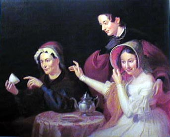

by Melina Kervandjian
|

William Sidney Mount's Dregs in the Cup (1838) (Fig. 1)-a painting that has received only cursory treatment by scholars,-marks one of the first appearances of the subject of fortune telling in American visual culture.1 The painting is Mount's largest known canvas-a work that, despite his best efforts at salesmanship, he was unable to sell. Mount scholar Alfred Frankenstein explains, "Its subject was probably against it...Except for The Painter's Triumph, it is Mount's only genre picture without a specifically rural setting, and his audiences wanted pictures of country life."2 Frankenstein is right: its subject was probably against it. However, the explanation that the painting was a commercial failure because it was not clearly about country life is, in my view, too limited. In this paper, I will more fully examine Mount's unusual subject by considering its possible sources and by locating the painting within the contemporary discourse on fortune telling. I will show that Mount's image owes much to its European antecedents both visually and in terms of the associations it encourages. More specifically, I will argue that Dregs in the Cup constructs fortune telling as an activity that belongs in an exclusively feminine domain where love matches are the primary subjects for speculation. In the painting, Mount depicts three women, gathered around a small round table in a dark, nondescript space. At left, sits the fortune teller who is clearly identified as a gypsy by both her activity and her appearance. Her more "exotic" and colorful clothing, accessories, and facial features distinguish her from the other two women. Her blue dress with red-orange stripes is accessorized with a shawl, a loosely tied bandana, and a pair of gold hoop-earrings. The earrings in particular are accessories that are often associated with the iconography of the gypsy. She holds a white tea-cup into which she stares and at which she points with her left hand.3 The tea leaves and the excess tea are visible in the white saucer which rests on the table along with a silver tea pot. The cup and the fortune-teller's activity are studied intently by the middle figure. Rather heavily clad, the woman wears a black hat and a rose-brown cloak over a black-green garment. Her right gloved hand clutches a black glove near her chin, while her bare left hand rests reassuringly on the shoulder of the young woman to her left. She stands in the role of companion and protector; it is not her fortune which is being revealed. The third figure is clearly the youngest and the most richly dressed. She offers a stark contrast to the other figures. Wearing a lacy, off-white dress, she occupies the lightest section of the composition. Her cream shoulders are bared while the two older women are covered to the neck. Her stylish ringlets appear more "feminine" when contrasted to the strange, almost mannishly cropped hair of the standing figure. Her stiff bonnet, which shields her gaze, is opposed to the loose-fitting shawl the fortune teller wears over her head. Finally, she wears no wedding ring, while the standing woman has one on her left hand. (Significantly, the unmarried woman is, as I will show, most often the receiver of the fortune in visual and literary representations of fortune telling). The young woman is clearly the shy ingenue who displays modesty by pulling her bonnet closer to her face and by turning slightly away from the activity on the left side of the painting. Her shyness and fear, however, are slightly undermined by the ambiguous gesture of her right hand which extends toward the fortune teller and by her grinning expression. Her comportment betrays a mixture of hesitation and curiosity and indicates that it is her fortune being discussed. This theme of the contradictory instinct-the desire to both know and not to know-is subtly reiterated by the standing figure who displays one gloved and one ungloved hand and who is torn between fascination and protectiveness. Contemporary critics who saw Dregs in the Cup at the National Academy of Design exhibition in 1838 chose to focus on the youthful paragon of femininity. One observer noted, "Mr. Mount represents a clear white skin, or a clear white cambric, very prettily. [His picture has] much that we like.... The feminine head...is wonderfully naive and engaging."4 Interestingly, the critic fails to mention the other two figures, or to reflect on the unusual subject matter. To begin to account for the review's omission, we must attempt to reconstruct the contemporary attitudes toward fortune tellers and fortune telling. Mount, who had what Barbara Novak calls an interest in the "tangibility of the unknown," regularly participated in séances and possessed a rather open outlook on the occult, which may have led to the execution of pictures such as Dregs in the Cup and Saul and the Witch of Endsor (1828).5 This interest, however, was not necessarily shared by Mount's audience who considered fortune telling an activity practiced by a "sly and vicious race" of superstitious (or un-Christian) people known as gypsies.6 An article published in 1836, for example, describes gypsies as "an idle, vagabond race, without settled homes, living by theft, beggary, fortune telling, and the mending of pots and kettles."7 Similarly, in a story published in Boston in 1841 entitled "The Gipsy's [sic] Revenge," gypsies are referred to as: "a revengeful and wicked people, and being numerous and artful, they seldom fail of a means to accomplish their dark purposes."8 The same story describes the primary occupation of gypsy women; fortune telling, as a deceitful activity practiced by a "professor of palmistry," who is essentially an accomplished actress or liar.9 These texts, roughly contemporary with Dregs in the Cup, offer a glimpse at the prejudices that Mount's painting may have encountered. They also present an interesting problem: both articles suggest either an absence or a rarity of gypsies in the America of the 1830s and 1840s. The author of "The Gipsy's Revenge" sets the story in England and writes: "The gipsies [sic] are an unknown race in America."10 The article from 1836 somewhat contradicts this assumption but indicates that gypsies are still somewhat remote from Mount's New York: "It has been supposed that there are none of this singular race in America.... Yet, in fact there is a colony of Gipsies, who were brought to America by the French [who] now live and flourish on the shores of Biloxi Bay, in Louisiana."11 The truth regarding the gypsy presence in America is difficult to determine. According to the historian Marlene Sway, there is evidence suggesting that gypsies arrived in the Colonies by 1695, and she quotes a 1768 newspaper entry which states that the "gypsy problem" in the Colonies is similar to that of England.12 In my own research, I found that the Mount painting and the contemporary texts (1830-1840) mentioned above are among the first substantial documents to confront the issue of gypsies or fortune telling. During the middle and latter half of the century, there is a marked increase in texts about gypsies and fortune telling, among them a few do-it-yourself guides like The Ladies' Love Oracle... (1863) and Secrets of Life Unveiled... (1877).13 Coinciding with the appearance of such texts are advertisements in local newspapers taken out by gypsies to generate interest in their fortune telling services. It remains unclear whether Mount could have based his painting on a study of an actual fortune teller. The early Mount historian Edward Buffet writes that Mount's fortune teller can be identified as Mrs. Amelia Longbotham, suggesting that she is not a gypsy, but a woman of the painter's acquaintance.14 Buffet does not substantiate or elaborate on this identification, but it is entirely possible that Mount combined his imagination with what he may have learned about gypsies through European sources to invent a scene where his friends served as models. It is also possible that Americans of European descent, whose families may have encountered or consulted gypsies, incorporated what they (or their ancestors) may have learned from these encounters in their lives, imitating gypsy practices for the sake of entertainment. A source which suggests that this type of borrowing may have occurred in nineteenth-century New York is The Prophetess... (1849), a biography of sorts published in 1849 which describes Madame Rockwell, a non-gypsy from Connecticut who apparently served as a fortune teller at Barnum's Museum beginning in 1845.15 The most easily documented sources for Mount's interest in and knowledge of the iconography and practice of gypsies and fortune telling are European visual and textual antecedents. The case for his attention to the specifically English visual tradition is strengthened when Dregs in the Cup is compared to Sir Joshua Reynolds' A Fortune-Teller (Fig. 2), exhibited at the Royal Academy in 1777 and published as an engraving in 1836, two years before Mount executed his painting. Reynolds' fortune teller reads palms rather than tea leaves, but the rest of the composition bears a striking resemblance to Mount's painting. As in Dregs in the Cup, Reynolds depicts three figures. At left, is a rather shabbily clothed gypsy. In the center, is an androgynous looking young man (rather than Mount's androgynous woman) who looks directly at the fortune teller while he supports (and perhaps even manhandles) the languid young girl whose palm he firmly raises to the fortune teller. As in Mount's painting, the almost angelic figure having her fortune told is distinguished by her youth, her light clothing, and her gaze/smile which is averted away from the activity to her left.16 Like the Mount and Reynolds images, documents of the period continually portray both the teller and the receiver of the fortune as female.17 In "The Gipsy's Revenge," for example, the wife of the squire, who is "a little inclined to faith in popular superstition," has her palm read by a gypsy fortune teller while her presumably more rational husband scoffs, indicating his disbelief in such "mummery."18 By contrasting the reactions of the husband and wife, the story, like other visual and written documents of the period, construct fortune telling as a frivolous diversion or entertainment that holds interest primarily for women. It is also of note that Mount takes the connection between women and fortune telling one step further by choosing to depict the reading of tea leaves, rather than palmistry or the reading of cards. The ritual of tea drinking is one that is associated in the nineteenth century with gatherings of women. Moreover, Caroline Gilman's Oracles from the Poets: A Fanciful Diversion for the Drawing Room (1844), a do-it-yourself handbook inspired by a "love of the mysterious" and an interest in the "common place Fortune-Teller," adapts the activity of fortune telling to make it readily available in the drawing room, where such gatherings of women would typically take place.19 Although Gilman's guide is geared toward women in general, fortune telling is commonly associated with unmarried women in particular. Recall that both Mount and Reynolds emphasize the youth of the woman who awaits news of her fortune. Both painters also communicate a sense of coyness and availability. When these images are considered within the broader visual and textual discourse on fortune telling, it becomes more clear that the fortune tellers in both cases are forecasting and, in the Reynolds example, possibly manipulating possible love matches. Consider, for example, the English painter John Opie's The Fortune Teller (c. 1800) (Fig. 3), where the gypsy, who this time uses cards, points to the ace of hearts, suggesting that love awaits the person who has consulted her.20 Similarly, in Charlotte Brontë's Jane Eyre (1847), the fortune teller, or Mr. Rochester in disguise, insists that he/she will only see the young, unmarried women: "`She says she'll have no gentlemen; they need not trouble themselves to come near her: nor any ladies either, except the young and single.'"21 And when the fortune teller/Mr. Rochester visits with Jane, the episode becomes an opportunity for flirtation or a chance for the would-be couple to explore their feelings. Furthermore, the Jane Eyre example considered in tandem with the Reynolds painting suggests that, in the rare instances when men play a role in this type of "mummery," they are engaging in a type of intellectual strategy rather than being superstitious dupes. A final contemporary example of fortune-telling by the American painter Trevor Thomas Fowler reinforces and also broadens the view of fortune-telling suggested by the texts and images we have considered. Fowler's Fortune Teller (1836) (Fig. 4) also depicts a presumably unmarried young woman whose availability is suggested by her décolletage. However, this woman, who quite emphatically offers her bare shoulders to the viewer, differs from the other receivers of fortunes in that she is more shabbily dressed and her sexuality is more obviously communicated. Here, the activity of fortune telling has been associated with predictions of a sexual, rather than a benign, romantic encounter. Perhaps this somewhat aberrant, sexually charged example is an attempt on the part of Fowler to simply envision the natural conclusion of the flirtation or potential matches that are the subjects of other images involving fortune telling. Another explanation may lie in Mortimer Thomson's rather bizarre The Witches of New York as Encountered by Q.K. Philander Doesticks, P.B. (1858) which describes a New York plagued "for so many years" by "witches" who practice "charms and love powders" and who promise "the prophetic infallibility of a pack of greasy playing cards."22 Thomson writes that the visitors to these "she-prophets" are often "ignorant servants, unfortunate girls of the town." These women are apparently lured into establishments that cover for houses of prostitution and abortion clinics.23 The Thomson text indicates that fortune telling, at least by the late 1850s, could be, on one level, associated with clandestine activities or sexual impropriety. The Fowler image suggests that this connection may have also been possible in the 1830s, when Mount painted Dregs in the Cup. If fortune telling did have such risqué connotations, it is not surprising that Mount's painting was rejected by art patrons. If this second layer of meaning was not yet attached to the activity depicted in Dregs in the Cup, there are other reasons why its subject may have been, in Frankenstein's words, "against it." Potential buyers may have not shared Mount's interest in the occult. Additionally, contemporary texts like the "Gipsy's Revenge" [sic] and "American Gipsies" [sic] demonstrate a common anti-gypsy sentiment which may have affected the painting's attractiveness to the art market. Moreover, the predominantly male group of possible patrons may not have been particularly interested in purchasing a painting depicting a primarily "feminine" subject. And, finally, a male patron probably would have been uncomfortable purchasing an image which excludes men, visualizes superstition and "mummery," and encourages (a woman's) fanciful notions of love. |
|